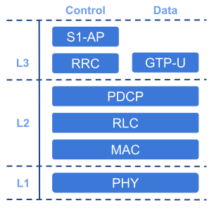

简介
概述
srsENB 是完全用软件实现的 LTE eNodeB 基站。 srsENB 作为基于标准 Linux 的操作系统上的应用程序运行，连接到任何 LTE 核心网络 (EPC) 并创建本地 LTE 单元。为了通过空中传输和接收无线电信号，srsENB 需要 SDR 硬件，例如 Ettus Research USRP。
要提供端到端 LTE 网络，请将 srsENB 与 srsEPC 和 srsUE 结合使用。
srsENB 还具有原型 5G NR 功能。
要提供端到端 5G NSA 网络，请使用 srsUE、srsENB 和 srsEPC。
要提供端到端 5G SA 网络，请使用 srsUE、srsENB 和第三方 5G 核心。
本用户指南提供了启动和运行 srsENB 应用程序、熟悉所有关键功能以及实现最佳性能所需的所有信息。有关扩展或修改 srsENB 源代码的信息，请参阅 srsENB 开发人员指南。
特点
srsENB LTE eNodeB 包括以下功能：
LTE 版本 10 与版本 15 之前的功能一致
原型 5G NR 支持 5G NSA 和 SA
FDD配置
测试带宽：1.4、3、5、10、15 和 20 MHz
传输模式1（单天线）、2（发射分集）、3（CCD）和4（闭环空间复用）
基于频率的 ZF 和 MMSE 均衡器
演进的多媒体广播和组播服务 (eMBMS)
Intel SSE4.1/AVX2 (+150 Mbps) 中提供高度优化的 Turbo 解码器
具有每层日志级别和十六进制转储的详细日志系统
MAC层wireshark抓包
命令行跟踪指标
详细的输入配置文件
适用于 EPA、EVA 和 ETU 3GPP 通道的通道模拟器
基于 ZeroMQ 的假 RF 驱动程序，用于通过 IPC/网络的 I/Q
ENB 内和 ENB 间 (S1) 移动性支持
具有类似 FAPI 的 C++ API 的比例公平和循环 MAC 调度程序
SR支持
定期和非定期CQI反馈支持
与核心网络的标准 S1AP 和 GTP-U 接口
具有商用 UE 的 20 MHz MIMO TM3/TM4 下 150 Mbps DL（采用 QAM256 时为 195 Mbps）
采用商业 UE 的 SISO 配置中的 75 Mbps DL
使用商用 UE 在 20 MHz 下实现 50 Mbps UL
用户平面加密
eNodeB架构
{kind=link}

基本 eNodeB 架构
srsENB 应用程序包括第 1、2 和 3 层，如上图所示。
在协议栈的底部，物理 (PHY) 层通过空中接口承载来自 MAC 的所有信息。它负责链路自适应和功率控制。
媒体访问控制 (MAC) 层将一个或多个逻辑通道之间的数据复用为传输块 (TB)，然后将其传入/传出 PHY 层。 MAC 负责通过控制信令、重传和纠错 (HARQ) 以及逻辑信道之间的优先级处理来调度连接的 UE 的上行链路和下行链路传输。
无线电链路控制 (RLC) 层可以以三种模式之一运行：透明模式 (TM)、未确认模式 (UM) 和确认模式 (AM)。 RLC 为每个连接的 UE 管理多个逻辑通道或承载。每个承载都以这三种模式之一运行。透明模式承载者只需通过 RLC 传递数据即可。未确认模式承载者执行数据单元的串联、分段和重组、重新排序和重复检测。确认模式承载者还执行丢失数据单元的重传和重新分段。
分组数据汇聚协议 (PDCP) 层负责控制和数据平面流量的加密、控制平面流量的完整性保护、重复丢弃以及分别往返于 RRC 和 GTP-U 层的控制和数据平面流量的按顺序传送。如果支持，PDCP 层还执行 IP 数据的标头压缩 (ROHC)。
无线资源控制 (RRC) 层管理 eNodeB 和连接的 UE 之间的控制平面交换。它生成由 eNodeB 广播的系统信息块 (SIB)，并处理 RRC 与 UE 的连接的建立、维护和释放。 RRC 还管理 eNodeB 和 UE 之间的加密和完整性保护的安全功能。
在 RRC 之上，S1 应用协议 (S1-AP) 层提供 eNodeB 和核心网络 (EPC) 之间的控制平面连接。 S1-AP 连接到核心网络中的移动管理实体 (MME)。从 MME 到 UE 的消息由 S1-AP 转发到 RRC 层，在 RRC 层中将它们封装在 RRC 消息中并向下发送到堆栈进行传输。从 UE 到 MME 的消息同样由 UE RRC 封装，并在 eNodeB RRC 处提取，然后传递到 S1-AP 并继续传递到 MME。
srsENB 内的 GPRS 隧道协议用户平面 (GTP-U) 层提供 eNodeB 和核心网络 (EPC) 之间的数据平面连接。 GTP-U 层连接到核心网络中的服务网关 (S-GW)。数据平面 IP 流量在 GTP-U 层封装在 GTP 数据包中，并且这些 GTP 数据包通过 EPC 进行隧道传输。该 IP 流量从分组数据网络网关 (P-GW) 的隧道中提取并传递到互联网。